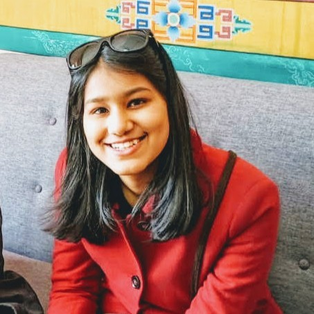

|
Akanksha Singal
I'm a CSE senior at Indraprastha Institute of Information Technology Delhi (IIIT-Delhi), with a passion for computer vision, robotics, and deep learning.
I've had the opportunity to work on projects like dynamic target tracking using quad-rotors, deep learning models for image segmentation, and visual SLAM for autonomous robots. I've interned at IBM IRL, where I proposed Information Theory-based algorithms, achieving 86% accuracy, culminating in a US patent. Additionally, I have extensive experience with frameworks like PyTorch, TensorFlow, OpenCV, and tools like ROS and Kubernetes.
Email /
Github /
LinkedIn
|

|
Research and Projects
Visual SLAM: Deployed a Direct Stereo Visual SLAM system for autonomous robot localization and mapping. (Tech Stack: ROS, Python, OpenCV)
Dynamic Target Tracking: Implemented deep learning algorithms to reduce training parameters and inference time for target tracking using quad-rotors. (Tech Stack: Python, ROS, TensorFlow, OpenCV)
IBM IRL Internship: Proposed novel Information Theory-based algorithms, achieving 86% accuracy and contributing to a US patent. (Tech Stack: Python, Kubernetes, Prometheus, IBM Instana)
Machine Learning Benchmarking: Led a team to compare Python ML frameworks by implementing 7 models and evaluating performance metrics. (Tech Stack: Python, PyTorch, TensorFlow)
|
Honors and Awards
- Merit Scholarship: 100% tuition waiver in 2nd and 3rd years, 50% in 1st year.
- Dean’s List for Academic Excellence 2022-23.
- Google Women Engineers Program: Selected among 250 scholars from 30,000 applicants across India.
- Summer Undergraduate Research Fellowship Award: Cash prize of ₹40,000.
|
Leadership and Community Work
- Coordinator, Astronomy Club IIITD; Events Lead, Women in Tech Club IIITD.
- Student Council Member (2023-24); Well-Being Coordinator.
- Mentored junior students under the IIITD Student Mentorship Program.
- Community service for 80 hours each at Raise India Foundation, Say Earth NGO, and Bachpan Bachao Foundation.
|
|
{kind=link}